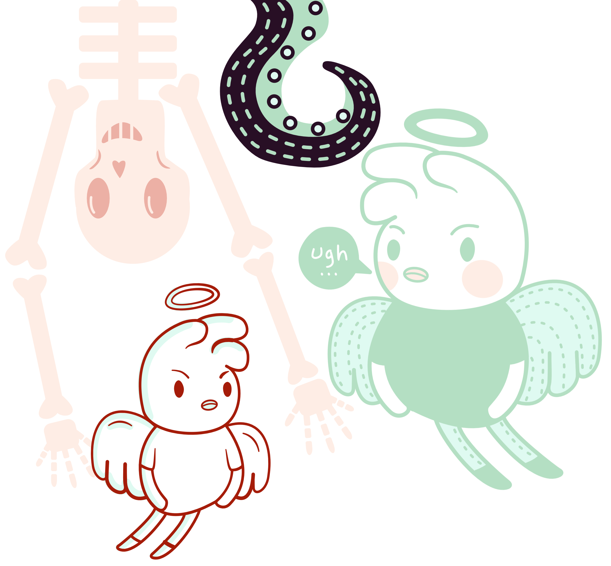

Home
About Me
Portfolio
Contact
Blog
Portfolio design sketches

Here are some of the original colour variation sketches and rejected designs for this website. If you would like to see the original sketches that went into the website
then you can see them here.